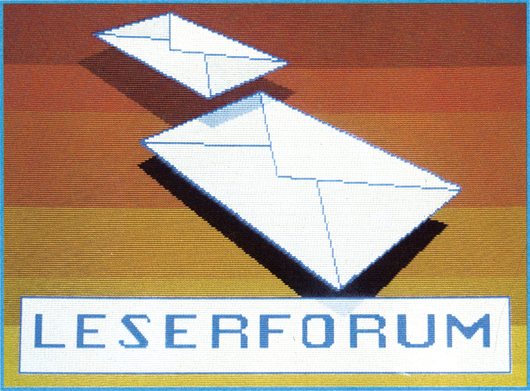

Tasten abschalten?
Wie kann man die Cursor-Tasten und/oder die <INST/DEL>-Taste mittels Software ausschalten, so daß sie keinen Einfluß mehr haben?
Datentransfer zwischen C 64 und Personal Computer?
Seit einiger Zeit bin ich Eigentümer eines C 64 und habe vorwiegend mit den Programmen Superbase, Vizawrite und Hi-Eddi gearbeitet. Zusätzlich habe ich mir nun einen IBM-PC/XT-Kompatiblen gekauft und möchte daher die auf der 1541 gespeicherten Daten auch auf dem PC nutzen. Soweit ich informiert bin kann man einen Datentransfer über ein Null-Modem vornehmen, da mein PC neben der parallelen auch über eine serielle Schnittstelle verfügt. Weiß jemand wie das dazu benötigte Hardware-Interface aussehen muß und welche Treibersoftware man braucht?
Superbase auf dem C 128
Es gibt bei der Superbase-Version für den C 128 ernsthafte Probleme mit der Druckeranpassung. Grund ist die automatische Aktivierung der DIN-Tastatur. Mit meinem Epson-kompatiblen Drucker Riteman F+ ist es nicht möglich, deutsche Umlaute, ß und % ausgedruckt zu bekommen. Es werden dafür entweder Leerzeichen oder andere Grafikzeichen gedruckt; sonst ist der Druck völlig einwandfrei. Da auch das Handbuch, außer dem ominösen Verweis auf die Superscript-Software, nicht weiterhilft, hat vielleicht jemand eine Lösung parat?
Der richtige VIC-Chip?
Setze ich im VIC-Register 17 (Adresse $D011) das Bit Nummer 5 (Wert 32), so wird die Grafik eingeschaltet. Lösche und setze ich dieses Bit sehr schnell, so verändern sich im Speicher merkwürdigerweise die Werte in einigen Speicherzellen, allerdings in keinen bestimmten. In meinem C 64 befindet sich ein VIC 6569-R3-3983 mit der Seriennummer UK B613006. Kann es sein, daß es verschiedene VICs gibt und daß bei mir ein falscher eingebaut wurde? Sind anderen C 64-Besitzern ähnliche Probleme bekannt?
Sprites und Zeichensatz?
Kann man Sprites mit bestimmten Zeichen vom Zeichensatz kollidieren lassen? Wenn ja, kann man dazu auch einen anderen Zeichensatz verwenden?
MMU-Probleme
Wer kann mir sagen, wie man beim C 128 das High-Byte des Page-Pointers (Adresse $D50A) für eine Stackverlegung in die Bank 1 programmiert. Das Byte läßt sich beschreiben, hat aber keine Wirkung. Laut Handbuch müßte es jedoch funktionieren.
Bar-Codes vom C 64 lesen?
Mit der Anwendung des Monats der Ausgabe 9/86 kann man Bar-Codes auch auf dem C 64 erstellen. Ich suche nun jedoch ein Programm zur Auswertung von Bar-Codes mit dem Bar-Code-Leser von Hewlett&Packard. Wer hat ähnliche Probleme oder kann ein Programm liefern?
»FILE DATA ERROR«
Was bedeutet die im Handbuch nicht aufgeführte Fehlermeldung »FILE DATA ERROR«? Ich habe weder bei den numerischen noch bei den Stringvariablen beim Speichern oder Einlesen einen Unterschied entdeckt und auch die Variablen sind dieselben. Woran liegt es also, daß diese Fehlermeldung auftritt?
Fastload und Wiesemann-Interface?
Kaum bin ich Besitzer eines Epson RX-80, tauchen schon die ersten Probleme auf. Wenn ich ein Programm mit Fastload laden will, dann fängt der Computer erst gar nicht an zu laden. Beim Betrieb mit Hypra-Load gibt dann der Computer gleich aus: »Bitte nur die Floppy anschalten«, obwohl der Drucker ja ausgeschaltet ist. Nach meiner Meinung liegt das am Wiesemann 92000/G-Interface. Wer kann mir da weiterhelfen?
Ausgabe 12/86
Solche Fastload-Programme verlangen oft, daß am seriellen Bus keinerlei sonstige Geräte angeschlossen sind. Bei Betrieb eines Interfaces, das über den C 64 mit Strom versorgt wird, reicht es in solchen Fällen nicht aus, den Drucker abzuschalten. Das Interface muß abgesteckt werden.
Seltsame Null
Wie kommt folgendes Phänomen zustande:
102,82216807939999999 = 663,999999
Beim Anfügen einer Null an die letzte Dezimalstelle des Exponenten wird das Ergebnis zu 664,000002. Bei weiteren drei Nullen haben wir 664,000008.
Ausgabe 12/86
Das Rechenbeispiel geht davon aus, daß der zehnstellige dekadische Logarithmus von 664 den Wert 2,8221680794 hat. Es hat allerdings keinen Wert darüber nachzugrübeln, warum und wie ein Computer mit seinen internen Näherungen und Abrundungen auf die mitgeteilten weiteren Ziffern gekommen ist.
Wer es genauer wissen will, muß mit mehr Stellen rechnen. So findet man bei 20stelliger Rechnung:
log 664 =
2,82216807936801748947
Rundungsfehler findet man hier höchstens in der 19. und 20. Stelle. Das Anfügen von Nullen am Ende der Exponenten ist ohne Wirkung.
C 64 stürzt ab?
Nach ein- bis zweistündigem Betrieb stürzt mein Commodore 64 ständig ab. Dabei erscheinen auf dem Bildschirm viele sinnlose Zeichen und Fehlermeldungen. Wenn man den C 64 dann ausschaltet oder einen Reset auslöst, ist oft schon die Einschaltmeldung »kaputt«. Nach ungefähr einer halben Stunde funktioniert der Computer dann wieder. Woran kann es liegen und wer hat ähnliche Probleme?
Ausgabe 12/86
Der Computer ist in Ordnung. Das Problem beim längeren Betrieb des C 64 ist insbesondere die Kühlung des Netzteils. Das Netzteil darf nicht zu sehr von anderen Geräten zugestellt werden. Eine ausreichende Lüftung beziehungsweise Kühlung ist unbedingt zu gewährleisten (Ventilator). Es kommt dann nicht mehr dazu, daß der Spannungsregler im Netzteil die Versorgungsspannung von 5 Volt wegen Überhitzung nicht mehr liefern kann.
Bei ähnlichen »Krankheitssymptomen« stellt sich meist heraus, daß der Computer gar nicht defekt ist, sondern daß das Netzteil die Schwierigkeiten verursacht. Es kann die Betriebsspannungen nicht über längere Zeit aufrechterhalten. Bei mir brachte der Kauf eines neuen Netzteils Erfolg und meine Anlage arbeitet nun wieder fehlerfrei. Die Kosten für ein C 64-Netzteil belaufen sich auf ungefähr 80 Mark. Eine Reparatur ist hier leider nicht möglich, weil das Netzteil vergossen ist.
Computerversicherungen
Gibt es für Computer Versicherungen gegen Beschädigungen, Kurzschlüsse, Diebstahl etc.?
Ausgabe 10/86
Die Securitas-Gilde, Am Wall 153/156, 2800 Bremen 1, Tel. (0421) 36770 bietet Versicherungen für elektronische Anlagen und Geräte an. Dabei lassen sich folgende Gefahren versichern:
- Fahrlässigkeit, Bedienungsfehler
- Kurzschluß, Überspannung
- Wasser, Feuchtigkeit, Überschwemmungen
- Naturgewalten, höhere Gewalt
- Diebstahl, Plünderung, Raub
- Vorsatz Dritter, Sabotage
- Brand, Blitzschlag, Explosion
Es können Fernsprechanlagen, Büromaschinen, Fernschreiber, EDV-Anlagen, Prozeßrechner und ähnliches versichert werden.
LCD-Displays am C 64?
Trotz intensiven Suchens in Elektronikkatalogen und Computerläden ist es mir nicht gelungen, eine Bezugsquelle für ein LCD-Display herauszubekommen. Wer kennt eine Bezugsquelle oder hat eventuell schon Erfahrungen mit dem Anschluß solcher Displays an den C 64?
Ausgabe 9/86
Die Firma Hitachi vertreibt LCD-Displays mit entsprechender Ansteuerung. Wobei allerdings nur durch externe TTL-ICs ein Anschluß an 6510- beziehungsweise Z80-Prozessoren möglich ist. Mittels der dazugehörigen Unterlagen kann ein solcher Anschluß an den C 64 erstellt werden.
C 64 auch für Blinde?
Ich würde gerne wissen, ob es eine Möglichkeit gibt, den C 64 so umzurüsten, daß auch Blinde mit ihm arbeiten können. Ist es zum Beispiel möglich, eine Blindenschriftlesezeile anzuschließen? Welche Software- und Hardwarelösungen gibt es?
Ausgabe 11/86
Die Entwicklung von Hardware für Braillezeilen ist mit relativ viel Aufwand verbunden. Es wäre wünschenswert, wenn sich bald auch in Deutschland Entwickler auf diesem Gebiet finden würden. Da es jedoch auch noch eine große Zahl von Personen gibt, die nur über einen geringen Sehrest verfügen und somit große Schriftzeichen noch entziffern können, wäre auch ein Programm interessant, das vergrößerte Zeichen auf den Bildschirm bringt. Hier könnten schon geeignete Leserprogramme Abhilfe schaffen, die so etwas auf dem C 64 oder C 128 in allen Betriebsarten in annehmbarer Geschwindigkeit realisieren.
Da Braillezeilen für den Privatmann relativ teuer sind, bietet sich für den Hobbybereich eine Sprachausgabe mit unbegrenzten Wortschatz an. Mir bekannte Lieferanten sind für die Sprachausgabe (»Votex« parallel und V.24-Schnittstelle): F.H. Papenmeier, 5840 Schwerte, Tel. 02304/16005 und für elektronische Blindenschrifttastzeilen: Blindenstudienanstalt Marburg.
Es gibt mehrere Software- und Hardware-Produkte für blinde und behinderte Computerbenutzer. Leider sind diese in Europa etwas dünn gesät. Allgemeine Informationen sind vom Library of Congress, 1291 Taylor St. NW, Washington, DC 20542, Tel. (020) 287-5100 zu bekommen.
Bücher und Zeitschriften, die sich mit derartigen Problemen auseinandersetzen und zudem auch in Blindenschrift erhältlich sind, gibt es bei folgenden Adressen:
- The National Braille Press, 88 St. Stephen Street, Boston, MA 02115, Tel. (617) 226-6160
- The National Braille Association, Braille Bookbank, 422 S.Clinton Ave., Rochester, NY 14620
- Recording for the Blind, 20 Roszel Road, Princton, NJ 08540, Tel. (609) 452-0606
Wer kennt Olympia Carrera?
Wer hat Erfahrungen mit der Typenradschreibmaschine Olympia Carrera und weiß, wie man die Maschine mit dem Programm Vizawrite auf dem C 64 zum Laufen bekommt?
Ausgabe 7/86
Ich habe mir die Olympia Carrera nur unter der Bedingung gekauft, daß sie mit der Textverarbeitung Vizawrite läuft. Die Verkaufsfirma verwies mich auf:
Hard- und Software Peter
Marburger Straße 22
6301 Rabenau-Londorf
Tel. 06407/8517
der gleichzeitig auch Commodore vertritt. Dort ist ein anderes Interface entwickelt worden, mit dem man die Sonderzeichen und sogar zentrierten Text von Vizawrite aus drucken kann. Fettdruck kann man natürlich nicht erwarten.
Zeichensätze vom Character-Editor
Wie kann man einen Zeichensatz, der mit dem Character-Editor aus Ausgabe 5/86 unter SVC (Save Character-Set) gespeichert wurde, von eigenen Basic-Programmen nachladen und aktivieren? Bei der CCP-Routine (Create Character-Programm) wird nur ein Zeichensatz gespeichert. Außerdem wird beim Start der Tastaturpuffer gelöscht, so daß ein Weiterladen ohne Maschinensprachekenntnisse unmöglich ist.
Ausgabe 1/87
Ich hatte ähnliche Probleme und habe einfach die abgedruckten Maschinenbefehle ins Basic übersetzt. Das Einschalten des Zeichensatzes geht mit »POKE 53272,28« und das Ausschalten mit »POKE 53272,21«. Da es sich bei dem Zeichensatz um ein Binärfile handelt, kann er mit LOAD"...",8,1« im Programm geladen werden, ohne daß dieses verloren geht.
Giga-CAD auf dem Shinwa CP 80II?
Wie erreiche ich eine Druckausgabe der Giga-CAD Grafiken auf dem Drucker Shinwa CP 80II? Ich besitze zusätzlich das Interface VCCP von Vobis.
Mit folgender Einstellung erreichen Sie einen Ausdruck der Grafiken:
Zeilenabstand n/144 Inch:
Sek.adresse 4: 27/51/1,5*n
Zeilenabstand 8/72 Inch:
Sek.adresse 4: 27/51/16
Doppelte Dichte / 320 Punkte:
Sek.adresse 4: 10/27/76/64/1
Doppelte Dichte / 640 Punkte:
Sek.adresse 4: 10/27/76/128/2
Einfache Dichte / 320 Punkte:
Sek.adresse 4: 10/27/75/64/1
Einfache Dichte / 640 Punkte:
Sek.adresse 4: 10/27/75/128/2
Nachladen?
Ein Basic-Programm, das mit »A=A+1:IF A=1 THEN LOAD"..."« nachlädt, erkennt die IF-Abfrage nach einer Compilierung nicht mehr. Wie kann man diesen Fehler beheben?
Ausgabe 12/86
Nach einem LOAD-Befehl wird bekanntermaßen ein Programm wieder von vorne durchlaufen. Da der Compiler jedoch die Variablen immer an den gleichen von vornherein festgelegten Speicherstellen ablegt und zudem noch den Neudurchlauf des Programms nach »LOAD« als richtigen RUN-Befehl auslegt, werden alle Variablen neudefiniert. Die Variable A wird also in diesem Fall jedesmal wieder gleich Null gesetzt und es wird ständig neu geladen. Als Lösung bietet sich an, statt der Variablen einfach eine Speicherstelle zur Abfrage zu benutzen. Geeignet hierzu wäre zum Beispiel die Speicherstelle 2 in der Zeropage, die nach dem Einschalten den Wert Null beinhaltet. Die Lösung müßte dann so aussehen: IF PEEK (2)=0 THEN POKE 2,1:LOAD"...".
Koalapainter und C 128?
Wie kann man Koalapainter-Bilder im C 128-Modus laden und im Grafik-Modus darstellen?
Ausgabe 12/86
Picture-Disk einlegen und den Befehlscode »GRAPHIC 1,1: BLOAD"<Name>",P8200« eingeben. Leider kann das Bild nur einfarbig in der aktuellen Vordergrundfarbe dargestellt werden.